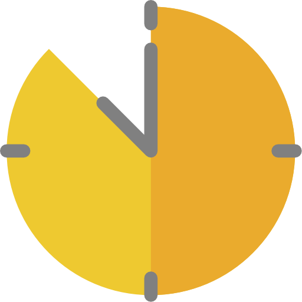

{{ recipe?.name }}

{{ recipe?.time | minutesToHours }}


Ingredientes
-
@for (ingredient of recipe?.ingredients; track $index) {
- {{ ingredient }} }
Preparación
-
@for (preparation of recipe?.preparation; track $index) {
- {{ preparation }} }
Notas
{{ recipe.notes }}
}